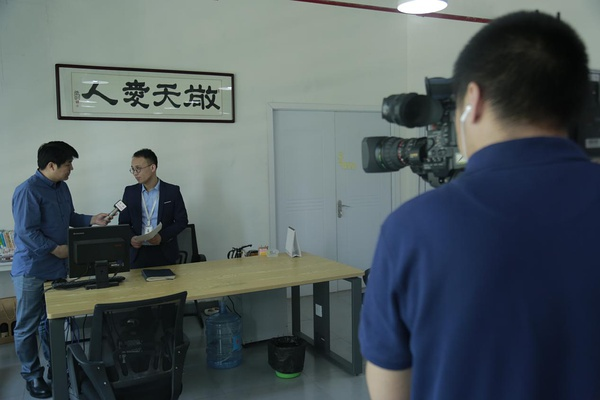

2016年5月12日上午9点，央视二套（CCTV-2）“财经资讯”栏目组到访潭州。此次“来自改革创新一线的报道”的主题采访在全国各地收集创新创业一线企业和团队典型，而潭州教育是湖南地区的第一家企业也是重要一站。
潭州教育成立于2007年，于2015年10月正式入驻长沙国家高新技术产业开发区麓谷芯城信息产业园区，是一家典型性的创新创业的“互联网+教育”企业。在市委市政府及长沙高新区的大力支持下，潭州教育得到了飞速的发展，已经成为一家具有一定影响力的跨品类的综合性直播在线教育企业。

栏目组拍摄潭州讲师上课情况
潭州教育董事长周有贵（Moon老师）与央视记者会谈
在采访过程中，董事长周有贵多次提到，潭州是一家文化教育企业，我们在给广大学员提供技术教学的同时也在传播我们的教学理念，唤醒学员学习的兴趣。周有贵还提及，在今年4月份，潭州已经开始筹备对外融资，通过吸引投资来开发潭州自己的产品平台，这将为潭州未来的发展奠定更加坚实的基础。

潭州教育董事长周有贵（Moon老师）接受央视记者采访
此外，央视记者在采访潭州教育合伙人印亚兰女士时，印亚兰就潭州未来前景、发展创新情况等进行了整体概述，并再次补充，潭州目前已经与多家投资公司进行过商谈，预计将在今年下半年确定公司的A轮融资状况。
潭州教育合伙人印亚兰（Sunny老师）接受央视记者采访
潭州教育是一家新兴创新型企业，是湖南关于创新创业企业及团队省市区三级资金及政策支持的重要扶持对象，在这样的发展趋势下，在所有潭州人的共同努力下，潭州教育也将继续迸发出勃勃生机，真正成为一家具有极强影响力、推动基础教育发展和社会进步的在线教育企业。
98.6%的用户看了此文都推荐了↓↓↓